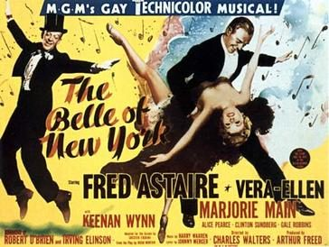

The Belle of New York

Starring: Fred Astaire, Vera-Ellen, Marjorie Main
Director: Charles Walters
Writer: Robert O'Brien, Chester Erskine
Producer: Arthur Freed
The Belle of New York is a 1952 musical comedy film directed by Charles Walters and starring Fred Astaire, Vera-Ellen, Alice Pearce, Marjorie Main, Gale Robbins and Keenan Wynn, with music by Harry Warren and lyrics by Johnny Mercer.
Trivia
- The Belle of New York originated as a 1897 musical written by Hugh Morton and Gustave Kerker.
- MGM acquired the film rights in 1943 for $77,000 (equivalent to nearly $1.5 million in 2026) to the copyright holders.
- By 1945, Arthur Freed had placed the project on his production schedule.
Filming Locations
- Principal photography began on June 18, 1951, which incidentally was the same day Singin' in the Rain (1952) went into production.
- Principal photography wrapped on October 3.
Previous Showings
5 Runs • 1 Festival
All runs on record (5):
- July 21, 1987w/ Three Little Words
- December 13 - 14, 1990w/ Three Little Words
- February 3 - 5, 1993w/ Three Little Words
- January 14 - 16, 2005w/ Three Little Words
- July 28 - 30, 2010Summer 2010w/ Silk Stockings